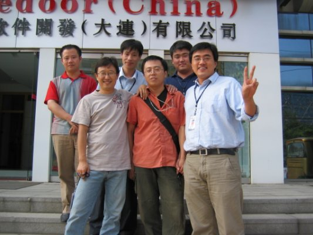
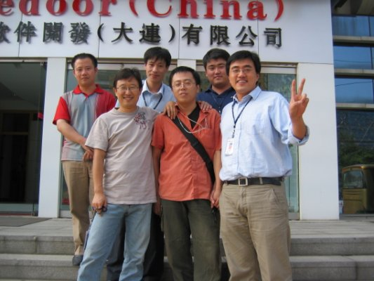
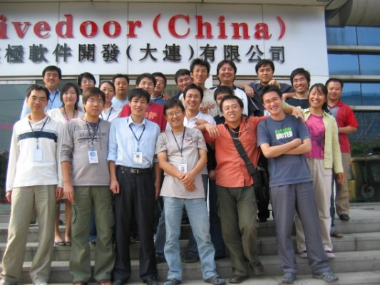
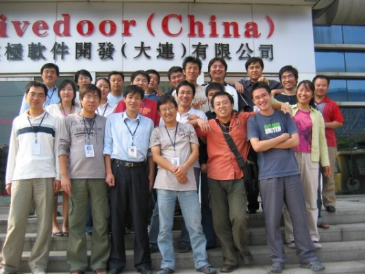
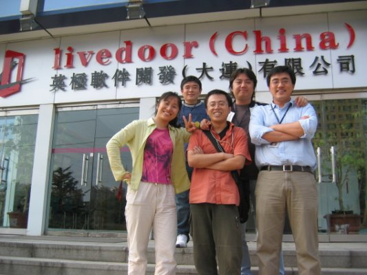
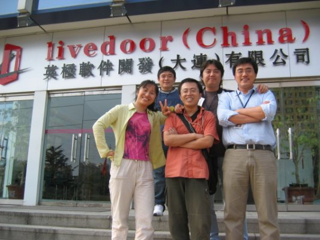

我在英极的日子
2014年从msn space存档中重新恢复出来！
今天开玩笑说我的新书的前言写完了，邹晓旭问啥书？是不是《我在英级的日子》? 呵呵，想想也是哈， 不过，这个题材要写本书有些单薄了，所以，写篇回忆录吧，OK, let‘s start！
英极编年史之事件篇
2004年加入英极，直接进入credit项目组，一干就是2年多，基本上，从加入公司就开始了朝九晚九的生活，周末只休一天，周六算作正常上班，后来好像到2005年随着某些项目经理的提议，英极才将每周休息一天变为隔周休息一天，当然这些算是后话。 刚进英极，credit算是当时公司最大的项目组了，充其量也不过10人左右，呵呵，到04年12月1号credit第一期发布成功，我们基本经历了三个阶段：朝九晚九，朝九晚11和黑白颠倒。 不过这还算好的了，毕竟我们发布成功了，另一个组可不是那么幸运了。
当时除了credit，隔壁还有一个FX的项目组，他们当时的“拼命”程度比我们还狠，当然啦，一定程度上是被逼无奈，因为项目发布后就搞砸了，当时比较有意思的就是，FX第二天要发布的时候， 所有的组员居然都不知道这一天是正式发布，甚至项目经理好像都不清楚，当然这种情况下发布出去的产品，不砸基本就是impossible了。 至此坐在隔壁的我们就可以看到这样的一幅景象，FX的兄弟们基本就是以公司为家，困了找张被子往桌子底下一铺迷糊一会儿，醒了接着干，呵呵，最长好像有三天三夜连着干的，靠，简直tmd的超人那！ 相对于FX来说，credit前期虽然也是辛苦，但是在12月1号发布后，没有出现大的问题，算是一次成功的发布，所以没有搞得跟他们那么惨。
到2004年底，英极基本上就这两个大一点儿并且虎虎生风的项目组，其他mac机以及c之类的开发组，没有几个人，应该算维护一类的工作吧，2004年，基本上是在这两个项目组的工作中谢幕的。
进入2005年的时候，哦，可能是04年底的时候就开始了，随着日本活力门（livedoor）集团的崛起，作为其中国的子公司，英极也随之开始了扩张。 英极也从原来几十人的公司扩张到了三四百人，当初英极最大的项目组credit，这个时候也只能干称小弟了，根本没法跟那时候三部张凌涛带领的200多人的证券组相比。 不光国内英极这边开发迅速扩张，大连这边的对日服务的CallCenter也同样迅速扩编，极力吸引日本毕业生到大连这边工作。 那个时候的英极也随着活力门集团而活力十足，魅力四射，不时的可以看到崭新的面孔，各项工作也随着部门的设立和规范而有条不紊的进行。 Credit虽然那个时候基本稳定了，人员上不像初期那个时候那么紧张，但还是吸纳了几个新人，老王那个时候已经是公司的CTO兼开发部部长，credit由老李做PM继续后继工作。
不过俗话说的好的，“三十年河东，三十年河西”，06年元旦左右，随着livedoor的传奇人物因为金融诈骗问题在日本那边受审，livedoor的神话也开始轰然破灭了，可谓树倒猢狲散，英极也无法单独承担原来的扩张所带来的压力，遂于某月周例会上宣布，打算几周后开始进行人员调整。 先从那个组最先开刀我是记不清楚了，因为credit应该算是最晚的吧。反正你可以想想，或者早就应该有所耳闻，三部进行人员调整的时候，基本上是一片“苦爹喊娘”的景象，当然，我是不愿凑热闹看这些东西，不过听说保安啥都上了，应该有不少情绪控制不了的吧！ 从后来的红黑榜上骂娘的就可以知道这次“人员调整”造成的结果如何了。证券组当时虽然是最大的项目组，但到livedoor出事儿之后，跟某些bank的谈判一直没有搞定，所以，开发方面也是迟迟没有全面的开展，部分人员闲散严重。 当每天上班就是上上网聊聊天的时候，突然说就被告知第二天不用来上班了，可以想想那些场景的出现也不足为奇了吧。不是我没有同情心，其实，“骂娘”只能说明你自己有问题，有那个时间“骂娘”，早干啥去了？！自身没有忧患意识，也怨不得任何人的！
反正三部裁员是大头，剩下的就是零零散散了，到我合同到期，老王安排我去天安的时候，人员从三四百好像弄到了200左右吧，当然，也可能我记错了，不过大体差不多。 credit当时还没有怎么动，不过，我到天安之后，老李也跑到了海辉，之后credit也开始了“人员变动”，呵呵，这些是我不在的时候发生的，具体啥情况我也就不想扯了…
总之，从时间跨度上来说，我经历了英极初期的艰辛到鼎盛时期的辉煌，然后部分见证了随着livedoor大厦轰然倒塌后英极随之的衰败，so this is the thing as it is.
英极编年史之个人篇
我是2004年6月10日到英级的，我也不知道为啥这个日子记得那么清楚，或许到英级本来就够突然的吧！ 本来那个时候我在联系一些公司准备从常州国光辞职的，因为国光跟日立的项目洽谈一直没有什么进展，人一直闲着， 所以，为了前途着想，不得不到处hunt新的职位，苏州上海等地的公司，最后敲定了一家上海的公司，开源产品比较偏重的， 说好周六过去上海签约。但是，这个时候恰好原来做兼职时候的PM在msn上跟我提到大连这边英极也在招人，而且待遇不错， 所以我就直接发了封email过来，说让这边2日内给我一个答复（周六要去上海签约嘛），没想到当天曲静就电话过来了， 然后老王的电话面试，笔试是net上传给我的，大约半个小时搞定了吧，然后send回来，反正到现在我也不知答的咋样，呵呵。 那天下午曲静就msn问啥时候能过去，说了一些啥6.10号恰好还有公司组织出去玩之类的诱惑之词，然后就让她给骗过来了， 应该是6.9号的飞机，当晚在大学同学那里凑合一晚，第二天到公司报的道。
进公司第一天当然不免各种手续和流程啦，先是曲静哇啦哇啦一堆什么公司规章制度啥的，然后是王珏作为开发本部部长进来给我讲讲公司的情况， 最后才是曲静说的“人很好的”即将成为我的项目经理的老王同志，进来也没扯啥，直接带我到开发组了，再细节的东西不记得了，最深刻的是当时看到都穿拖鞋，呵呵，这一点后来才明白。
刚进credit的时候，项目刚刚启动，还处于前期需求分析和技术调研阶段，记得当时组员也就那么几个人吧，现在都能数出来：老王(PM),徐敬琪(WhiteSock,袜子)，曲天连(肥猫，garfield)，大凯，凌爱国，杨小明，最后就是我和同样刚进项目组的老迟同志，呵呵。 那个时候是大长桌子，几个人都在一个大的隔断里面，而且英极当时充其量也就几十个人吧，整个大厅其实还算满“宽敞”的。 测试人员那个时候和开发不在一个隔断，所以，晓丽和阿梅在项目初期不是很熟。 翻译当时是财哥，小金啥时候进来的我还真忘了，应该是04年末以后吧。 随着项目人员的需求，老李，阿俊也陆续加入CREDIT，到2005年，基本上credit人员也凑齐了，贾维，阿九，晓强，鲁鹏…
刚进credit那会儿，对swt和jface之流根本就是一窍不通，因为之前一直做J2EE的web方面开发，所以，马上转到standalone的应用开发，多少有些不适应。 反正只是记得老王直接把swt的新闻组网址往我的IE里面一敲，就放给我看了，靠，现在想想，还亏英文过得去，不然新闻组那些东西打死都搞不懂啊。 除了SWT/JFace，还和袜子负责各种技术（hibernate之类）的调研，然后写调研报告…
当日方的式样讲解差不多的时候，基本就开干了，毫不隐讳的说，式样讲解我是大部分没有听懂，因为听听着就迷糊，呵呵，当然，那个时候毕竟经验有限嘛。 这开干起来，那可就没个白天黑夜咯。基本上老王那时候属于强夜猫子型，白天他乱七八糟事情缠身，所以，干活儿没啥效率，那么就晚上发飙，通常是后半夜反而精神抖擞的。 这可就害惨我们了，我从小属于长睡型，一睡觉少了就没精神，一过后半夜眼皮肯定打架，开始规定是晚上9点下班，后来因为12月1号credit第一期要发布，就直接天天11点才能下班回家，这个时候还算好的，起码能回家睡（当然，也不能叫回家睡啦，因为那个时候寄居在同学那里），每天班车最后肯定是剩下我，晓丽，还有到大纺的一个哥们，这哥们后来走了。 到接近发布的前一个月，credit全员纯粹就颠倒了，晚上和后半夜干活儿，白天回家睡觉，现在我都不知道那个时候我是怎么熬过来的，听老王说是，一到后半夜我就不行了，呵呵
这种生活持续了半年多，天天如此，月月如此，所以，你也不难理解说有些人刚来英极1天，第二天就不来上班了，呵呵。试用期到了要转正的时候，我想过要闪人的，不过最后还是留下来了，具体为啥我也记不清楚了。反正，那时候杨小明已经走了，我应该是第二个老王找的谈的， 最后就记得他那句“操，怎么都那么有想法”，呵呵，估计前面的人跟我的闪人想法都差不多，哈，最终留下来我估计我也没啥高尚的想法吧，呵呵，一个我贪心，多要了点儿工资，另一个就是看老王跟吉田较劲，我也有点儿要较劲的感觉，就好像你能顶，我咋就不能顶下去的意思，who knows，呵呵
credit第一期开发完成之后，第二期和后继开发虽然也是时有加班，但已经不像原来那么“惨烈”了，基本上每周三发布一次版本。从啥时候让我负责版本发布我记不清楚了， 估计初期就已经给我了吧，InstallAnywhere从5.5的调研到吉田自己付费的6.0版本，最终发布文件的打包都是我这里做的。所以，到后期的时候，我基本上就没啥开发任务了，呵呵 一到周三发布，如果手头有开发任务就对应一下，没有就上上网，吃吃零食（当时晚上加班有补助的，而且周三通常都要到第二天早上才能验证完毕）。 但是，还是一样，我一到后半夜还是犯困，通常都是老王或者老李看测试通过了，走过来叫醒我，”阿福，开始打版本了“，我就睡眼惺松的爬起来，开始抖擞精神着手发布。 迷糊归迷糊，不过打包制作installer直到上传服务器发布，好像我还没有因为马虎出过问题，幸哉幸哉，呵呵
那段因为晚上最早九点下班回家嘛，所以晚饭肯定不能回去吃了，所以，一段时间我们就三五成群的往黑石礁或者东财院里跑，冬天是跟老李，阿俊吃黑石礁路边摊的蒸饺最多，那家蒸饺做的比较有特色，价格便宜量又足，”我们一直用它“，呵呵，主要是咸菜还免费，冬天蒸饺加蒜泥，那叫一个爽啊。 其他有段时间是老李，袜子，曲儿往东财院里儿跑，那里许多小饭店，价格不贵，吃的也不错，几乎每天晚上换一家或者同一家换不同的菜吃，呵呵，AA嘛，今天你掏了，明天就是我掏,回想起来那个时候还是挺爽的哈。
05年英极最鼎盛的时候，credit组我手头上的工作基本也没啥了，InstallAnywhere啥的也开始能transfer给刚进来的吴晓军都transfer给他，恰好公司准备搞全员的一个技术培训，包括spring，hibernate，linux系统以及各个数据库等 内容。 因为我是比较早在项目里面使用spring的，所以，顺便跟老王提了一句说spring那块儿由我来讲，后来就我和Roger配合进行的spring的培训，我主讲IoC和AOP，他负责Business Middle Tier以及MVC相关内容。 培训总结在我之前的日志里面也有所总结，呵呵，这里就不扯了。
后期对credit项目做了一定的回顾，主要是技术架构方面的东西，在之前的blog中也有所阐述，毕竟技术和理念都是在发展的，即使你不能从原来的legacy系统转换过来，但是，所谓温故而知新，你可以从原来的系统中发现不足并进行改进。 相对于那个时期我提出的总结，感觉还是比较恰当的，因为系统当时确实存在这些可以改进的问题。 但是，任何观点或者方案的提出都是有其背景和前提条件的，如果不能满足这些，或许提出的改进方案反而会带来负面的结果。 从看FES的front组使用EclipseRCP就可以说明以上观点，在没有相应技术储备，没有相应master的开发人员，在短时间内上线一个稳定的产品，还是存在一定风险的，这当然是后话，与英极没关系，呵呵
06年上半年在项目组工作不是很忙的情况下，我报了驾校，开始了考取驾照生涯。看起来好像请假挺多，但是，结束后回头看看，好像加起来也就三天假期，呵呵，自己都有些不相信，靠，没摸几天车就把驾照拿到手了。 不过偶比较有自知之明，将来要上路肯定要先找陪练先提前跑跑，呵呵，总之那，一句话，偶06年拿到了偶人生中的第一本驾照，C照哦，哈哈
随着livedoor一帮元老与英极上层又重新组建了恒睿软件，偶合同到期后就被老王“连哄带骗(kidding)”的给弄到这边来了，英极的个人编年史就此结束。
 
  
  

Comments
春英 金 - 8/30/2007 11:21:23 AM
我相信在credit呆过的，心里都有本书啊~~ 我记得第一天进公司把刘石误当成日本人达两天~汗
dong wang - 8/30/2007 11:22:22 AM
传奇啊。整得我也想写回忆录了 我在猿洞属马的日子 凝 水 - 8/30/2007 11:30:54 AM
看了，都是眼泪。 我现在却一个字也写不出来…… 凝 水 - 8/30/2007 11:32:02 AM
感觉有点像红楼梦。 Roger™ - 8/30/2007 12:32:44 PM
一员大将即将离去，留下的全是血泪史！ 兄弟，干杯，继续努力。 noisenoise - 8/30/2007 2:03:05 PM
黑石礁哪里有卖蒸饺的店?没发现过啊看了照片,还是很让人感慨啊 xl33 liu - 8/30/2007 3:15:08 PM
怀念累但却充实的credit，但我实在是想不起来晚上到”大纺”的那个同事是谁了，哎＾ Dino Li - 8/30/2007 3:39:55 PM
此情可待成追忆，只是当时已惘然 Wang Darren - 8/30/2007 5:43:26 PM
to Kim： 是因为石头胖嘛？hoho to 师姐： 现在不知道有没有了，那时候是冬天，沿着黑石礁辽师附中那个路口往里走，路边会有围起来的帷帐，那里面是卖各种小吃的，包括蒸饺。
春英 金 - 9/11/2007 9:21:44 AM
是因为石头冲我只点点头，不说话，所以误认为是日本人。 而且他的胖胡劲儿也像^^(
「为AI疯狂」星球上，扶墙老师正在和朋友们讨论有趣的AI话题，你要不要⼀起来呀？^-^
这里
- 不但有及时新鲜的AI资讯和深度探讨
- 还分享AI工具、产品方法和商业机会
- 更有体系化精品付费内容等着你，加入星球(https://t.zsxq.com/0dI3ZA0sL) 即可免费领取。(加入之后一定记得看置顶消息呀！)

开天窗，拉认知，订阅「福报」，即刻拥有自己的全模态人工智能。